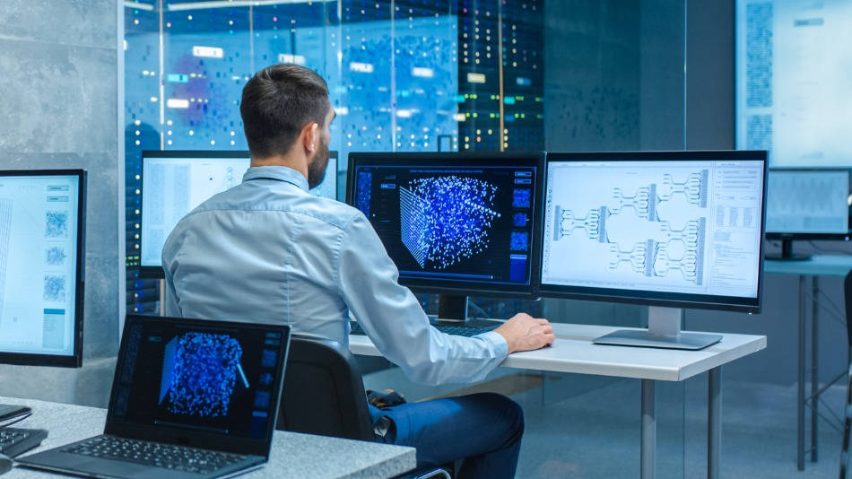
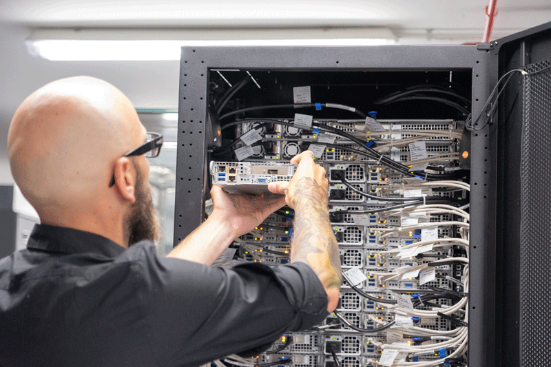

Diseño de Redes
Creamos arquitecturas de red robustas y escalables para conectar tu negocio al mundo.
- Planificación de topología.
- Instalación de cableado.
- Configuración de seguridad.
En Geo's Corp, entendemos que cada empresa es única. Por eso, ofrecemos servicios personalizados que se adaptan a tus necesidades específicas, garantizando la máxima eficiencia y seguridad en tus operaciones diarias.
Creamos arquitecturas de red robustas y escalables para conectar tu negocio al mundo.

Mantenimiento proactivo de servidores y estaciones de trabajo para asegurar la continuidad.

Protegemos tus activos digitales contra amenazas externas e internas con las mejores prácticas.
Migramos tu infraestructura a la nube para mayor flexibilidad y escalabilidad.
Asistencia técnica rápida para resolver cualquier incidencia y mantener la productividad.
Te asesoramos para alinear tu tecnología con tus objetivos de negocio y optimizar la inversión.